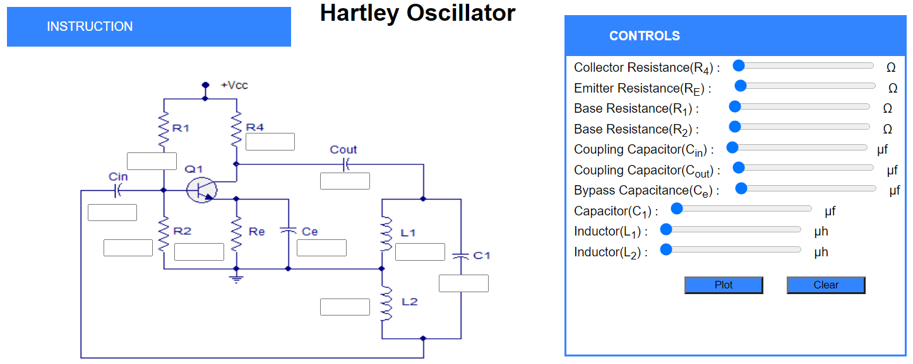
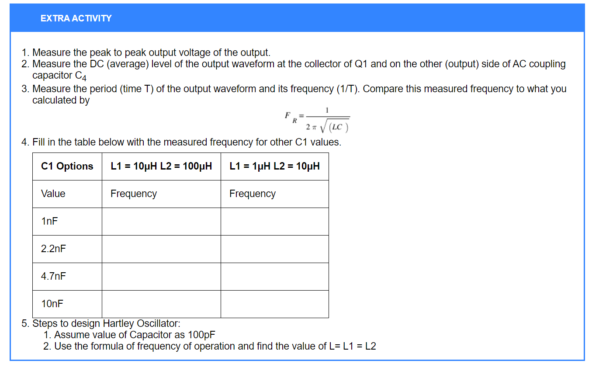

Hartley Oscillator
Procedure:
- There are two parts in this experiment.
- In Part 1, the initial values of the circuit are given in the introducton dropdown, students just have to set the values using the controls section.
- Also,Students can use left and right arrow keys to set a particular component value.

- After setting the values, there are two buttons available plot and clear.
- Plot will check whether all the values entered are correct and Output will be shown in the Output section.
- Clear will clear the contents of input boxes and the output graph.
- Students can check their calculated output with the simulator output in the check output section.
- Part 2 contains extra activity where you have to solve questions as directed and perform the experiment for given values of Capcitors and Inductors.

Procedure for Pre-Test:
- To start the test click on start button.
- After Answering the questions, click on submit to submit the test.
- After submitting the Test,you need to download your submitted answers using download button first only then you can see the answers otherwise you will not be able to download your submitted answers